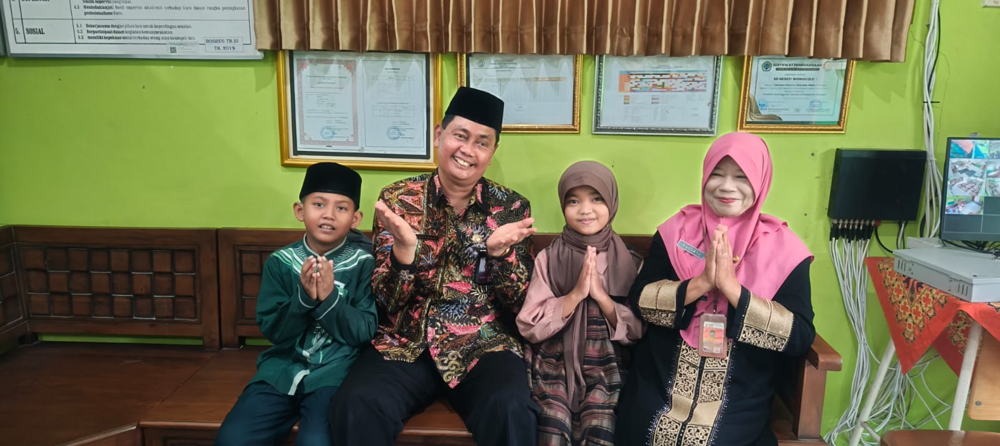

Guru SDN Wonocolo 1 Menjadi Pemateri Pelatihan Kurikulum Merdeka
Tanggal: 28 Februari 2025
SDN Wonocolo 1 Taman kembali menunjukkan komitmennya dalam meningkatkan kualitas pendidikan. Ibu Siti Fatimah, guru kelas 5, dipercaya menjadi pemateri dalam pelatihan Kurikulum Merdeka yang diselenggarakan se-Kecamatan Taman.
Dalam pelatihan ini, beliau membagikan pengalaman praktik baik implementasi Kurikulum Merdeka di kelasnya, seperti kegiatan projek berbasis profil pelajar Pancasila, strategi pembelajaran berdiferensiasi, serta pengelolaan asesmen formatif.
Sekolah merasa bangga atas kontribusi aktif dari guru-gurunya dalam kegiatan pengembangan profesionalisme guru. Semoga semangat berbagi ini terus menginspirasi rekan guru lainnya.
← Kembali ke daftar berita